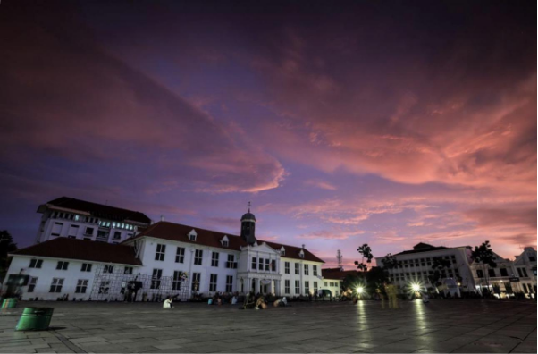
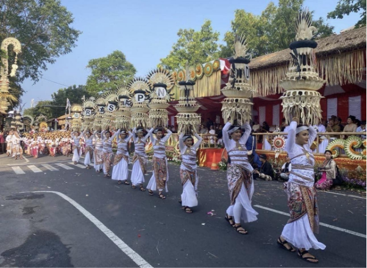
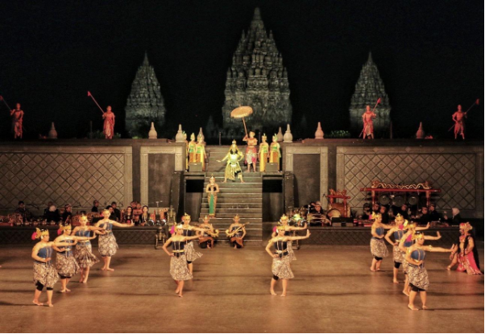
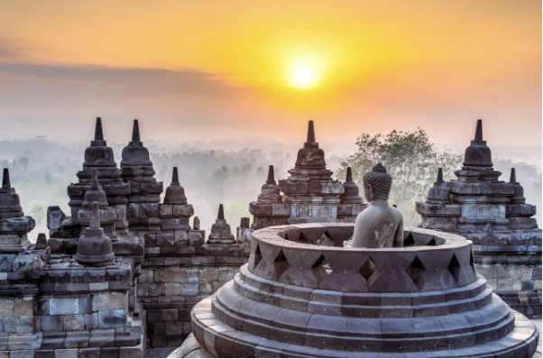
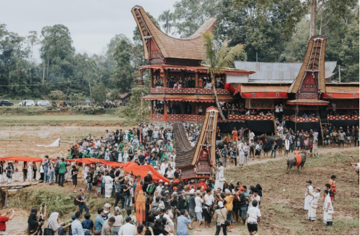
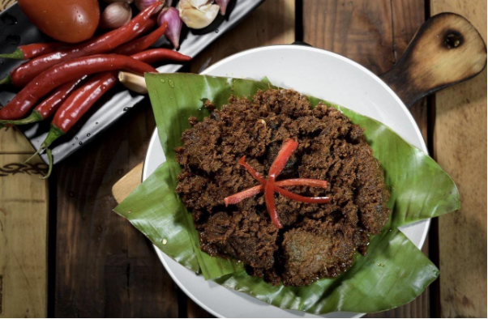
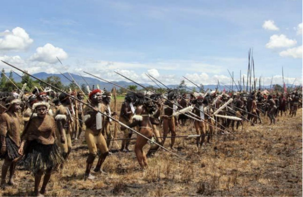

CULTURAL MAP
Jelajahi seni dan warisan budaya Indonesia, dari satu daerah ke daerah lainnya.



Jakarta
Kota Tua
Kota Tua Jakarta adalah kawasan bersejarah yang dulunya menjadi pusat pemerintahan dan perdagangan pada masa kolonial Belanda, dikenal juga dengan nama Batavia. Kawasan ini menyimpan banyak bangunan tua bergaya Eropa yang masih berdiri hingga sekarang, seperti Museum Fatahillah, Museum Wayang, dan Jembatan Kota Intan.
View on Google Maps

Bali
Pesta Kesenian Bali
Pesta Kesenian Bali adalah festival seni tahunan yang diselenggarakan di Bali untuk memperkenalkan dan melestarikan berbagai kesenian tradisional Bali. Acara ini menampilkan berbagai pertunjukan seperti tari, musik, kerajinan, dan kesenian daerah dari berbagai wilayah di Bali. Festival ini menjadi salah satu kegiatan budaya terbesar yang mempertemukan seniman dan masyarakat dalam merayakan kebudayaan Bali.
View on Google Maps

Yogyakarta
Sendratari Ramayana Prambanan
Sendratari Ramayana Prambanan adalah pertunjukan seni yang menggabungkan tari, musik, dan cerita Ramayana dengan latar belakang Candi Prambanan. Pertunjukan ini menceritakan kisah Rama, Sinta, dan Rahwana melalui gerakan tari tanpa dialog. Sendratari ini menjadi salah satu pertunjukan budaya yang terkenal di Yogyakarta dan Jawa Tengah.
View on Google Maps

Magelang
Candi Borobudur
Candi Borobudur adalah candi Buddha yang terletak di Magelang, Jawa Tengah, dan dibangun pada masa Kerajaan Syailendra. Candi ini memiliki struktur bertingkat dengan banyak stupa dan relief yang menggambarkan ajaran serta kehidupan masyarakat pada masa itu. Borobudur menjadi salah satu peninggalan budaya Indonesia yang terkenal dan termasuk dalam situs Warisan Dunia UNESCO.
View on Google Maps

Tana Toraja
Rambu Solo
Rambu Solo adalah upacara adat masyarakat Toraja di Sulawesi Selatan yang berkaitan dengan penghormatan dan pemakaman orang yang telah meninggal. Upacara ini biasanya dilakukan dengan berbagai rangkaian ritual, pertunjukan budaya, dan penyembelihan hewan sebagai bagian dari tradisi masyarakat Toraja. Rambu Solo menjadi salah satu tradisi Toraja yang masih dilaksanakan dan dikenal hingga sekarang.
View on Google Maps

Padang
Rendang Minangkabau
Rendang Minangkabau adalah makanan tradisional khas masyarakat Minangkabau, Sumatera Barat, yang dikenal dengan cita rasanya yang kaya dan bumbu rempah yang kuat. Makanan ini biasanya dibuat dari daging sapi yang dimasak dalam santan dan berbagai rempah hingga kuahnya mengering dan bumbunya meresap. Rendang juga dikenal sebagai salah satu makanan Indonesia yang populer hingga mancanegara.
View on Google Maps

Papua Pegunungan
Lembah Baliem
Lembah Baliem adalah kawasan lembah yang terletak di pegunungan Papua dan menjadi tempat tinggal masyarakat dari berbagai suku asli Papua, seperti suku Dani. Kawasan ini memiliki pemandangan alam berupa pegunungan, lembah hijau, dan kehidupan masyarakat yang masih mempertahankan berbagai tradisi lokal. Lembah Baliem juga dikenal sebagai salah satu wilayah budaya dan wisata alam yang menarik di Papua.
View on Google MapsPeta budaya ini mengajak kamu menjelajahi kekayaan seni dan budaya Indonesia dari berbagai daerah. Setiap pin pada peta menandai satu lokasi yang memiliki cerita budayanya sendiri, mulai dari adat istiadat, kuliner khas, tempat bersejarah, hingga seni tradisional. Cukup klik salah satu pin, dan kamu akan langsung diarahkan ke halaman berita yang membahas budaya dari daerah tersebut.
Melalui peta ini, kami ingin menunjukkan bahwa warisan budaya Nusantara sangat beragam dan tersebar di seluruh penjuru negeri. Dengan cara yang sederhana dan visual, kami berharap pengunjung tertarik untuk mengenal, menghargai, dan ikut melestarikan budaya Indonesia.